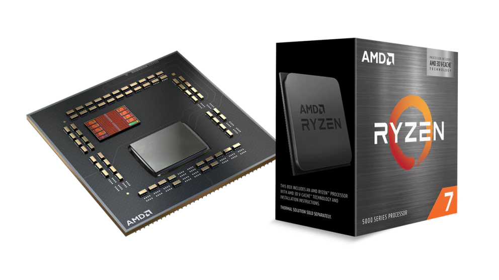
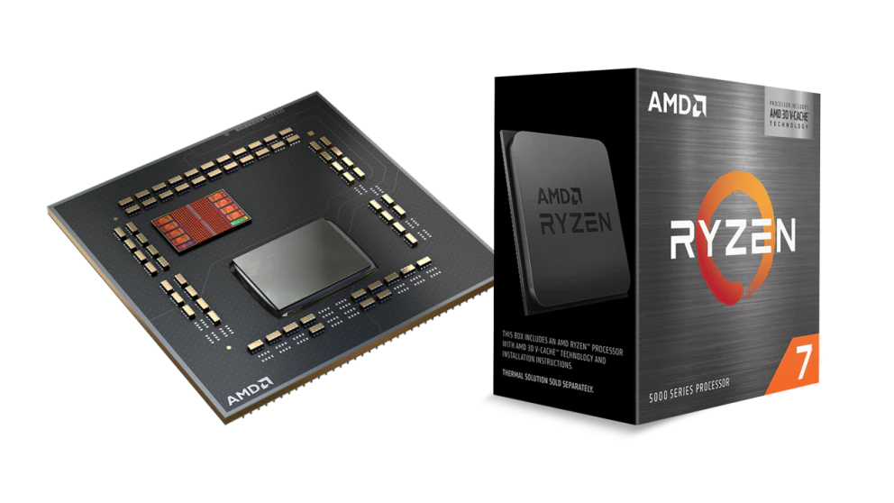
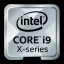
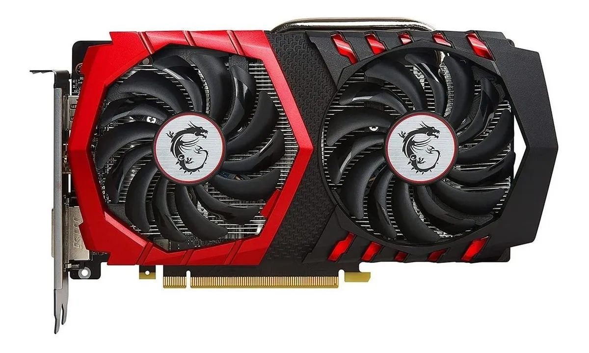

El procesador más rápido del mundo para jugar en PC1
Consigue, en promedio, un 15 % más de rendimiento con el procesador AMD Ryzen™ 7 5800X3D, el único con tecnología AMD 3D V-Cache™.3
Consigue, en promedio, un 15 % más de rendimiento con el procesador AMD Ryzen™ 7 5800X3D, el único con tecnología AMD 3D V-Cache™.3
Estos procesadores cuentan con una arquitectura innovadora diseñada para un desempeño inteligente (IA), visualizaciones y gráficos envolventes, y un ajuste y una capacidad de ampliación mejorados que permiten a los gamers y apasionados de las PCs tener el control total de las experiencias en el mundo real.
【Arquitectura Pascal】La tarjeta gráfica GeForce GT 730 tiene un reloj Shader de 1400 MHz DDR3 de 4 GB en la arquitectura Pascal, se actualiza fácilmente para un uso cómodo y ahorrar tu presupuesto para tu PC vieja.
